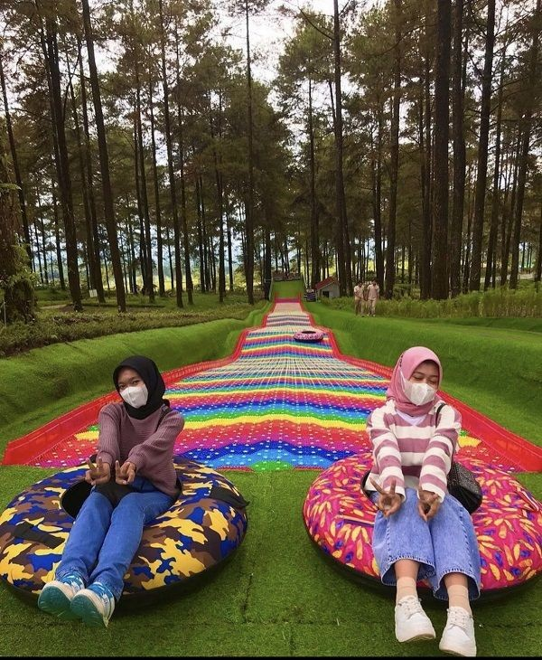
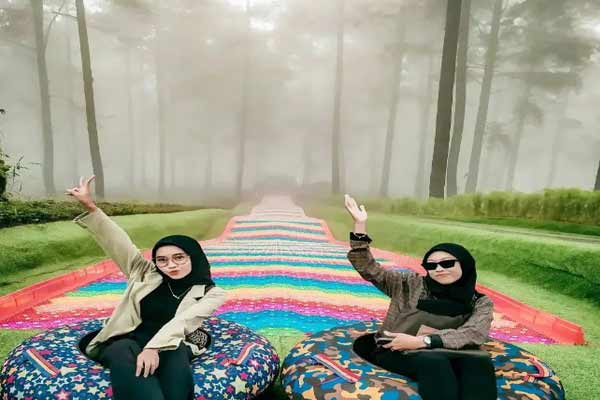
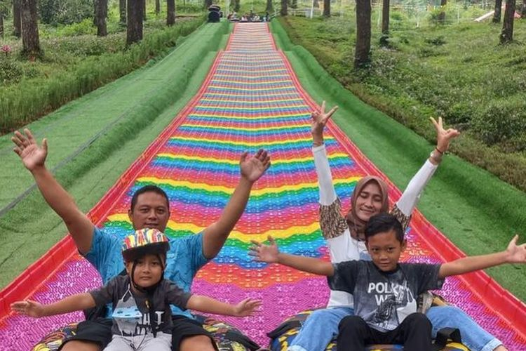
Lestari Dan Keluarga
"The Village adalah tempat yang indah dengan konsep yang menarik. Taman publiknya luas dan dirancang dengan baik, memadukan elemen Barat dan Nusantara. Sungguh menyenangkan berjalan-jalan di sini dan menikmati suasana yang tenang dan asri. Cocok untuk semua usia!".
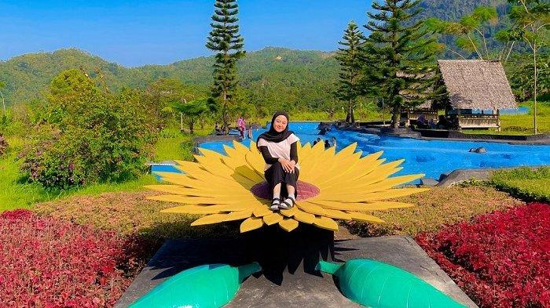
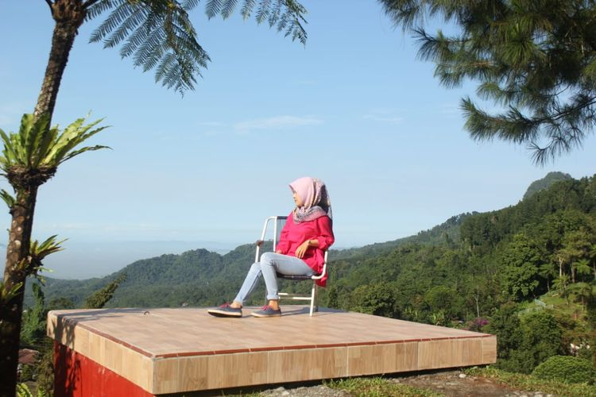
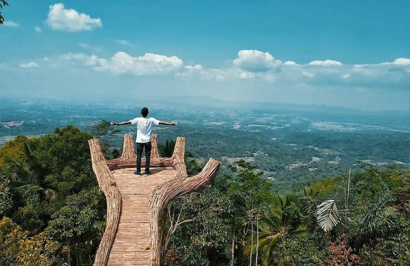
Maya Dan Keluarga
"Purbasari Pancuran Mas adalah tempat wisata yang luar biasa dengan banyak wahana edukasi. Anak-anak saya sangat menikmati River World dan Aquarium Toyosukha. Exotic Bird Park juga sangat menarik dengan berbagai jenis burung. Kami sekeluarga sangat puas dengan kunjungan kami di sini!".
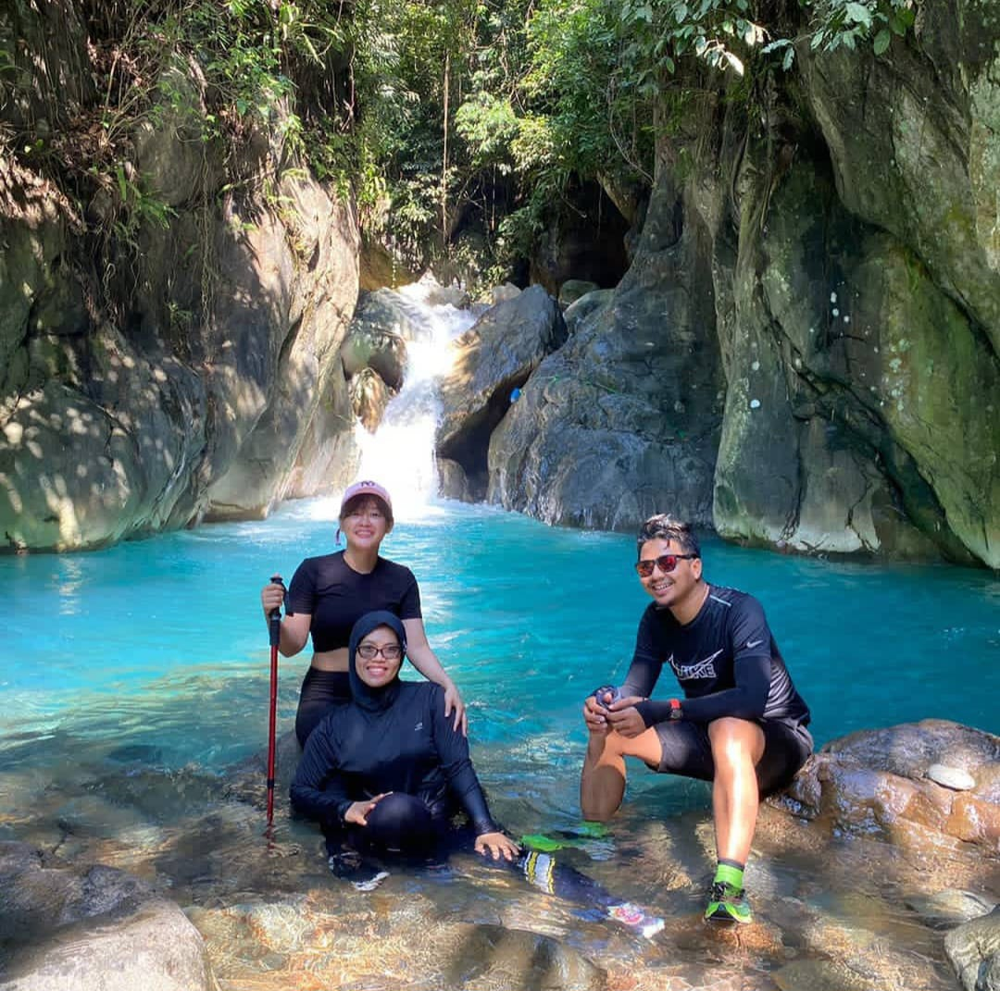
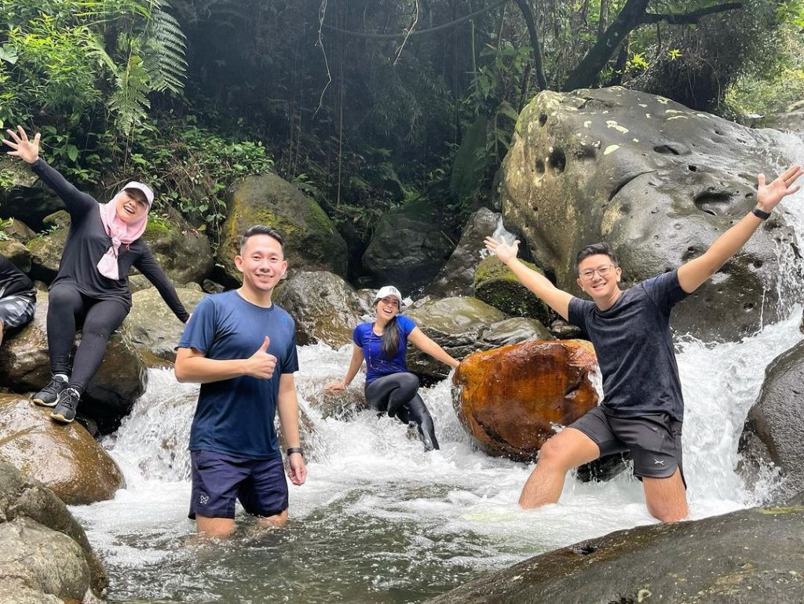
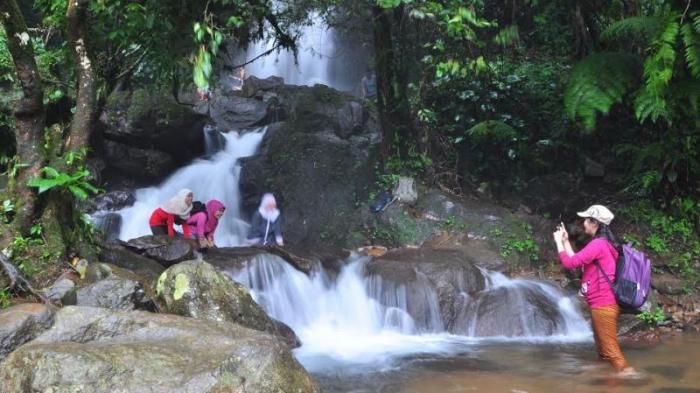
Budi Dan Keluarga
"Curug Cipendok menawarkan pemandangan yang menakjubkan! Trekking ke air terjun sangat menyenangkan dan cukup menantang. Suara gemuruh air terjun sangat menenangkan, dan udara segar di sekitarnya benar-benar menyegarkan. Tempat yang sempurna untuk melarikan diri dari hiruk-pikuk kota.".
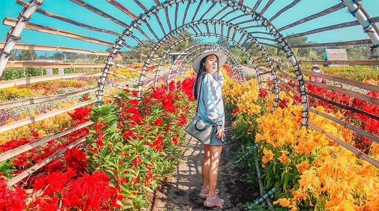
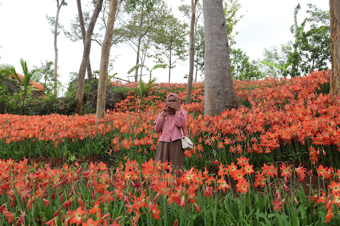
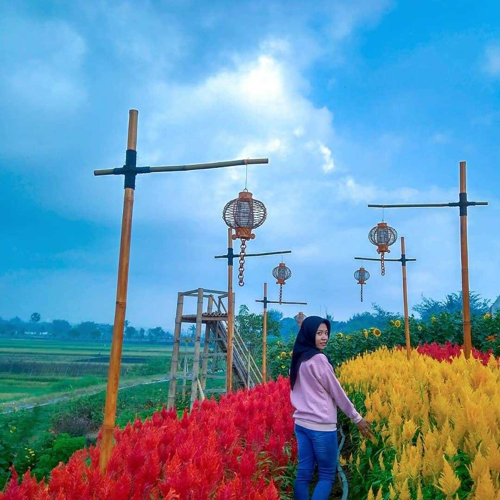
Mela Dan Keluarga
"Kebun Raya Baturraden adalah tempat yang luar biasa! Koleksi tanamannya sangat beragam, dan suasana sejuk dengan pepohonan yang rimbun membuat kunjungan saya sangat menyenangkan. Lokasinya mudah dijangkau dan sangat cocok untuk liburan keluarga. Pasti akan kembali lagi!".
Blog
Tips dan Trick Liburan aman dan nyaman Bersama Keluarga
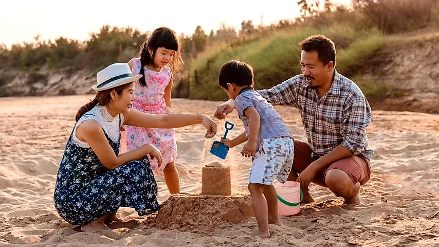
Liburan bersama keluarga adalah momen berharga yang dapat menciptakan kenangan indah dan mempererat hubungan antar anggota keluarga. Agar liburan Anda berjalan lancar dan menyenangkan, berikut beberapa tips dan trik yang dapat membantu:
1. Rencanakan dengan Matang: Pastikan untuk merencanakan liburan jauh-jauh hari. Tentukan destinasi yang sesuai dengan minat semua anggota keluarga dan buatlah itinerary yang fleksibel.
2. Pilih Akomodasi yang Ramah Keluarga: Cari penginapan yang menyediakan fasilitas untuk anak-anak, seperti kolam renang, area bermain, dan menu makanan anak. Ini akan membuat seluruh keluarga merasa nyaman dan terhibur.
3. Siapkan Kebutuhan Anak: Bawa perlengkapan penting seperti obat-obatan, pakaian ekstra, mainan favorit, dan camilan sehat untuk anak-anak. Hal ini penting untuk menjaga kenyamanan dan kesehatan mereka selama perjalanan.
4. Libatkan Anak dalam Perencanaan: Ajak anak-anak berpartisipasi dalam merencanakan kegiatan liburan. Biarkan mereka memilih beberapa aktivitas yang ingin dilakukan. Ini akan membuat mereka lebih antusias dan merasa dihargai.
5. Jaga Kesehatan dan Keselamatan: Pastikan semua anggota keluarga dalam kondisi sehat sebelum berangkat. Selalu bawa hand sanitizer, masker, dan obat-obatan dasar. Selalu perhatikan keselamatan, terutama saat berada di tempat-tempat yang ramai.
6. Buat Kenangan Bersama: Manfaatkan momen liburan untuk membuat kenangan indah bersama keluarga. Ambil banyak foto, lakukan aktivitas bersama, dan nikmati setiap momen kebersamaan.
Tentang Kami

Selamat datang di Tiketku.id! Kami adalah agen travel yang telah berdiri selama 20 tahun, berkomitmen untuk membantu Anda mewujudkan impian perjalanan ke berbagai destinasi di seluruh dunia. Dengan pengalaman yang matang, kami menawarkan layanan yang andal dan profesional, mulai dari pemesanan tiket pesawat, reservasi hotel, hingga paket wisata lengkap yang dirancang khusus untuk kebutuhan Anda.
Visi kami adalah menjadi mitra perjalanan terpercaya yang selalu menghadirkan pengalaman terbaik bagi setiap pelanggan. Kami percaya bahwa setiap perjalanan adalah kesempatan untuk menciptakan kenangan tak terlupakan. Oleh karena itu, kami selalu berusaha memberikan layanan prima dengan harga terbaik dan penawaran eksklusif.
Kami bangga dengan kepercayaan yang telah diberikan oleh ribuan pelanggan setia selama dua dekade. Testimoni positif mereka adalah motivasi kami untuk terus meningkatkan kualitas layanan dan inovasi dalam setiap aspek. Bersama Tiketku.id, Anda dapat menikmati pengalaman perjalanan yang aman, nyaman, dan memuaskan.
Terima kasih telah memilih Tiketku.id sebagai mitra perjalanan Anda. Kami berharap dapat terus menemani dan mendukung setiap petualangan Anda ke berbagai destinasi impian.